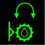
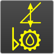

Getriebeölstand prüfen
Sicherstellen, dass folgende Voraussetzungen erfüllt sind:
❑ | Maschine steht waagrecht. |
❑ | Maschine ist außer Betrieb genommen (Weitere Informationen siehe: „Außerbetriebnahme“). |
❑ | Maschine ist vor unbefugter Inbetriebnahme gesichert. |
Getriebeölstand am Bildschirm prüfen
Steuerung einschalten. |
Taste Bildschirmseite Aggregat am Bildschirm drücken. |
Bildschirmseite Aggregat wird am Bildschirm eingeblendet. |
Taste Getriebeölstand des Drehwerks am Bildschirm drücken. |
Getriebeölstand wird geprüft. |
Wenn Getriebeölstand ausreichend ist:
Taste Getriebeölstand des Drehwerks ändert Status: |

Fig. 5965: Taste Getriebeölstand des Drehwerks (leuchtet grün)
Fig. 5965: Taste Getriebeölstand des Drehwerks (leuchtet grün)
Wenn Getriebeölstand zu niedrig ist:
Taste Getriebeölstand des Drehwerks ändert Status: |

Fig. 5966: Taste Getriebeölstand des Drehwerks (leuchtet gelb)
Fig. 5966: Taste Getriebeölstand des Drehwerks (leuchtet gelb)
Wenn Taste Getriebeölstand des Drehwerks nach 10 Sekunden gelb leuchtet: | |
Getriebeöl einfüllen (Weitere Informationen siehe: „Getriebeöl einfüllen“). | |
Getriebeölstand im Schauglas prüfen
Getriebeölstand im Schauglas 1 prüfen. |
Wenn im Schauglas 1 kein Getriebeöl ist: | |
Getriebeöl einfüllen (Weitere Informationen siehe: „Getriebeöl einfüllen“). | |